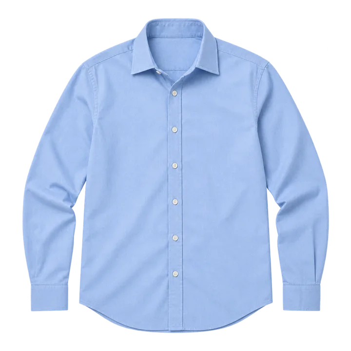
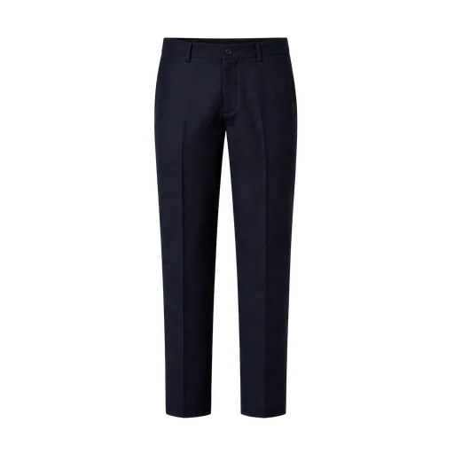
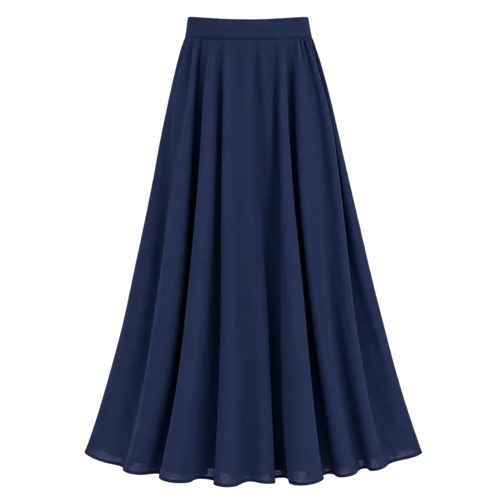
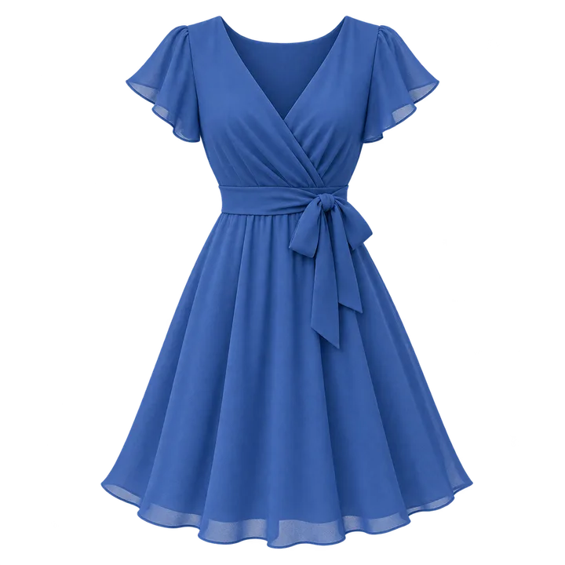
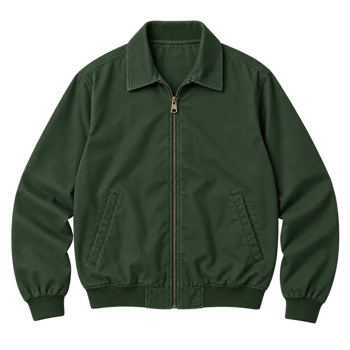
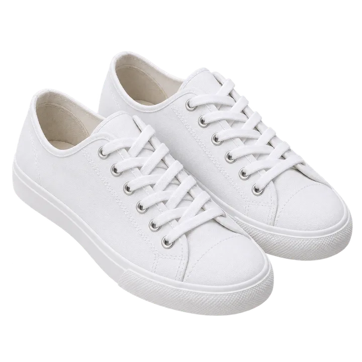
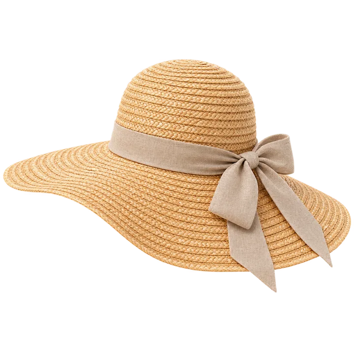
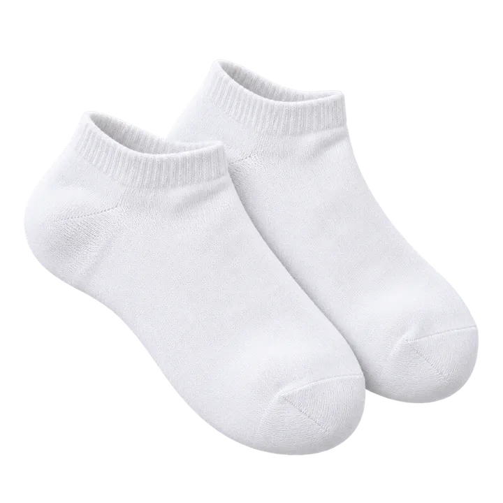
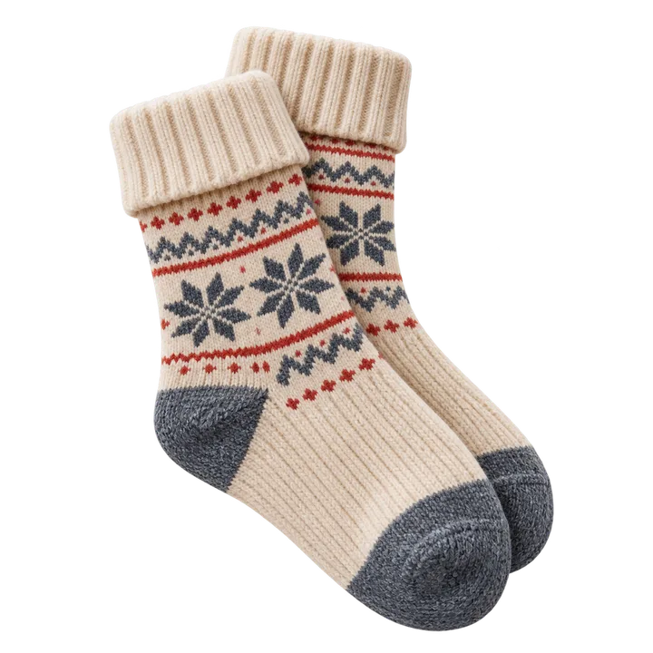

la maglietta
3 příkladové věty
- Indosso una maglietta bianca.
- La maglietta è di cotone.
- Metto la maglietta nell’armadio.
Slovní zásoba A1–A2
Otevřete skříň a objevte každé slovo pomocí obrázku a tří italských ukázkových vět.











Učte se podstatné jméno vždy společně se členem. Tak si zapamatujete i rod slova.
50 cvičení s obrázky
Podívejte se na obrázek a napište italské slovo. Můžete napsat i člen; uvedená synonyma jsou přijímána.
8 vět k volnému překladu
Napište svůj překlad a poté jej porovnejte s možným řešením. Tyto aktivity se ukládají do zařízení, ale nemění skóre.
Přeložte volněI am wearing a white T-shirt.
Navrhované řešení: Indosso una maglietta bianca.
Přeložte volněMartin is wearing a light-blue shirt.
Navrhované řešení: Martin porta una camicia azzurra.
Přeložte volněThese trousers are black.
Navrhované řešení: Questi pantaloni sono neri.
Přeložte volněThe skirt reaches the knee.
Navrhované řešení: La gonna arriva al ginocchio.
Přeložte volněThe dress is in the wardrobe.
Navrhované řešení: Il vestito è nell’armadio.
Přeložte volněThe jacket has two pockets.
Navrhované řešení: La giacca ha due tasche.
Přeložte volněThese shoes are comfortable.
Navrhované řešení: Queste scarpe sono comode.
Přeložte volněThe hat protects from the sun.
Navrhované řešení: Il cappello protegge dal sole.
Italiano con Martin
Dva učitelé, dva přístupy. Vyberte si podle svých zájmů.